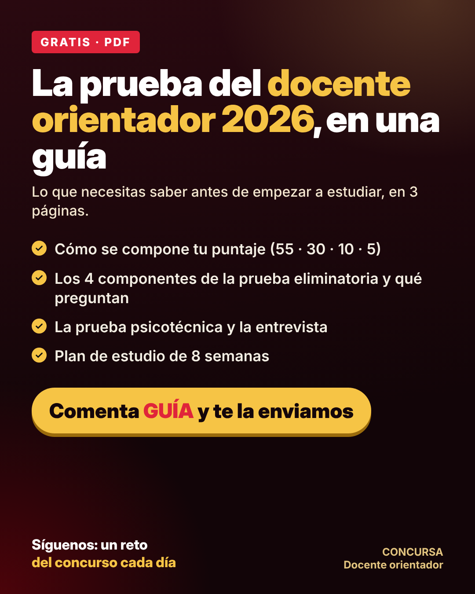

La prueba del docente orientador 2026, en una guía
Tres páginas con lo que necesitas antes de empezar a estudiar: cómo se compone tu puntaje, los cuatro componentes de la prueba eliminatoria, la psicotécnica, la entrevista, un plan de estudio de 8 semanas y los errores más frecuentes.
Descargar la guía (PDF) Síguenos: un reto diario¿Quieres medirte? Prueba gratis el simulacro diagnóstico.